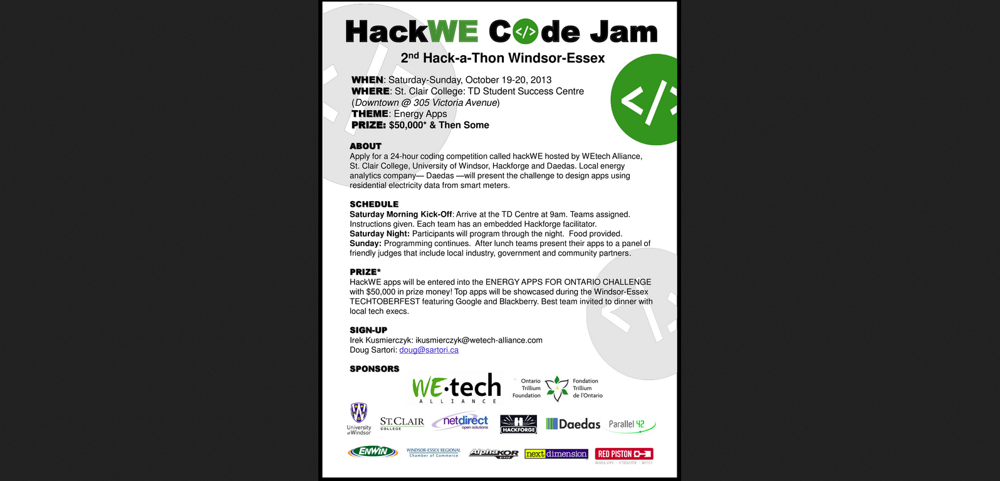
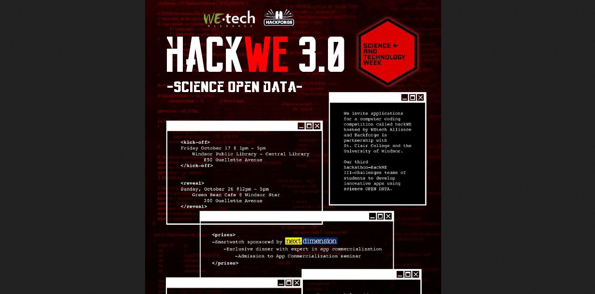

Scholars Portal Day Dec 3, 2014. Snell Hall, St. James Cathedral, Toronto
From DIY to Working Together Using a Hackspace to Build Community Mita Williams
You can't tell how many apples are in a seed
2010
2012
2013


2014
From DIY to Working Together Using a Hackspace to Build Community
1 :: Institutions reduce the choices available to their members
These frozen choices are what gives institutions their vitality — they are in fact what make them institutions. Freed of the twin dangers of navel-gazing and random walks, an institution can concentrate its efforts on some persistent, medium-sized, and tractable problem, working at a scale and longevity unavailable to its individual participants.
Hackforge would not have existed if it weren’t for its very first volunteers
Every interaction is a
giftCulture is to an organization as community is to a city
Take the time to make sure that the way you do things matches up with the why you do things
Hackforge supports capacity building in the community and supporting a culture of mentorship and inclusivity
2 :: Show Your Work
You have to show your work in public if you want collaborators to find you.
Lean coffee!
3 :: Acknowledge who is not in the room
4 :: A mailing list is not acommunity.
5:: Invest in but do not outsource community management
We are a volunteer organization and as such, by the process of evolution, we are a place for the patient and the forgiving.
Institutions reduce the choices available to their members. Show your work. Acknowledge who isn’t the room. A mailing list is not a community. Invest in but do not outsource community management.
Thank you.